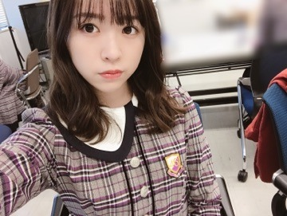

2018/1116Fri融通無碍
爪
ベストヒット歌謡祭、
ありがとうございました！
帰り道は遠回りしたくなる派です
歩くのが好きだからかな？
15日に発売されましたEX大衆に
載っています！

まだ真っ暗な早朝に撮影開始
という初めての試み
まだ外は真っ暗でその景色もとても綺麗でした
日の出るタイミングと共に
撮りたいという事で日の出る前の
暗闇のかっこいい雰囲気と
日が出た瞬間の儚い雰囲気を
両方撮っていただきました。
綺麗でずっと見ていられたなあ

この時の感動は忘れられないなあ
ちなみに撮影が終わった後、
サプライズで誕生日のお祝いも
して下さいました！
ケーキはみんなで分けて食べました
何だか凄い幸せな気持ちだった(^ ^)
皆様に是非見て頂きたい！
宜しくお願い致します(^ ^)

告知
11月22日 のぎ天2 配信開始
今回はみんなで心理テストを
行いました。
私の持ち込み企画です！
みり愛
2018/1114Wed獅子博兎
こんばんは！

昨日はのぎおび見て下さった皆様、
ありがとうございました(^ ^)
生配信でコメントを通じてお話が
出来るっていいなあと。
終始グダグダでしたが、、
NOGIBINGO!10、
「さつまいもを我慢しない」

私の必死さ凄い

見て頂けましたでしょうか？
さつまいもをとにかく収穫し、
料理も沢山頂きました。
お松の行動を阻止する役目に
途中からまわっていましたが。笑
幸せなロケでした〜
とか言っていたらさつまいも
食べたくなってしまった。
帰り買って帰ろうかな
採れたてを焚き火で焼いて頂く
幸せったらない、美味でした！
あの味本当に忘れられない、、
なんと先日、又もや
NOGIBINGO!ロケに参加させて頂き
今回のロケもまた違った内容なので
きっと皆様も楽しんで頂けるかと
思います(^ ^)
メンバーは花奈さん、れんか、未央奈
そして私の四人となっております。
また日にちが近くなったら
お知らせします！

告知
11月15日 ベストヒット歌謡祭(19時〜)
11月15日 EX大衆
今回のEX大衆さんでの撮影は
とにかく景色がとんでもなく綺麗です。
また発売されてから、オフショットと共に
お話したいと思います(^ ^)
みり愛
2018/1101Thu有難き幸せ
19歳になりました。
ラスト10代、やれる事はやり尽くしたい！
いろいろな事を走馬灯のように
思い出すと、本当にいろいろな事が
あったなあと思います。
今まで色々なお仕事に携わり
日々新たな発見や助言を
頂きながらも、約6年が経ちました。
その中で学ぶ事沢山ありました！
もちろん至らない部分は沢山あります。
日々課題も増えています
ですが辛い事も嬉しい事も、
皆さんともっと分かち合っていきたいし
活動していきたい。
嫌だなと逃げそうになる事も
嬉しいと素直に思える事も
今はそれを受け入れていって、
それで今後目標や夢がもっともっと
明確になれば嬉しいなあ。
スタッフの皆様、メンバーのみんな
ファンの皆様、そして家族。
沢山の方に支えてもらっていて、
今の私があります。
日々、感謝でしかないです、、、
19の年は皆様に嬉しい報告が
沢山出来るように。
皆様の喜んでる姿がもっと
見れるよう、それを目標に
頑張っていきます！

初めてモバイルメールを送る時に
一緒に送った写真、13歳の私。
このハートのスタンプの雑さに
びっくりしてます
懐かしいなああ

これは最近の私
身長だけは一向に変わらず、
そして伸びる気配を感じ取る事が
出来ません（＾_＾）
みり愛
2018/1029Mon胸中成竹
先日はパシフィコ横浜にて
個別握手会がありました！
1部・2部
ヴィンテージのワンピースに
ウエストが分かるように
分厚いベルトを組み合わせてみました
3部

4部
生誕委員の方が作って下さった
Tシャツを着ました〜
5部

そして生誕祭も行われました。
お越し下さった皆様、
そして何よりこの日の為に
作り上げて下さった生誕委員の皆様
本当にありがとうございました！


お花は有難い事に沢山頂き、
全てお載せしたかったのですが
画像枚数の制限上載せられず、、
こちらの写真も真ん中から半分しか
写っていませんが、
全てのお花はモバイルメールの方に
送らさせていただきました！
奥の方に隠れてしまっていたお花も
全て写真に収めて送りました(^ ^)
力になっています、いつもありがとう！
幸せ者だなあ、と実感。
次の日には乃木恋イベント！
盛りだくさんで嬉しいです。
私は北海道のアンダーライブで披露した
「欲望のリインカーネーション」
を踊った後に、
私がこの日の為に1週間かけて
振りを作ったダンスを皆様に
レクチャーして一緒に踊る。
という事をしました〜
欲望を披露したかった理由は
握手会やブログのコメント等で
「欲望や人生を考えたくなるのダンス
見たかったなあ」
という声が有難い事に多かった為、
せっかくなら！という事で
踊らさせていただきました。
私が振り付けをした曲は
Jennifer Lopez のBootyという曲。
難しくしてしまってごめんなさい、、笑
苦戦しながらも一所懸命に
踊って下さった皆様の優しさに
素直に嬉しくなってしまいました、笑
でも私が振り付けをしたダンスを
皆さんが踊ってくださる。
そして一緒に踊るという時間が
貴重だったので物凄く嬉しかった！
ありがとうございました！
動画を撮らさせていただいたけど、
それを帰ってから家で見て
私の勝手に考えた企画なのにも関わらず
真剣にダンスを覚えようとしてくれたり
笑顔にしようとして笑わせてくれたり
バースデーソング歌ってくれたり
その優しさに涙出てきちゃって、、笑
動画が涙でかすんでぼやけた。笑
本当に嬉しかったんです(^ ^)
リストバンドは皆さんとお揃いです(^ ^)
自分の誕生日になったら
またいろいろ書きたいので、
本日はここまでで。
みり愛
2018/1023Tue人心収攬
先日は幕張メッセにて個別握手会が
ありました。
お越し下さった皆様、
ありがとうございました(^ ^)
1部

2部

3部
4.5部の写真撮れず、、申し訳ないです。
赤紫のニットワンピを着ていました。

お花に紛れがち渡辺
素敵な色沢山、ありがとうございます！
本当に花が好きだから元気貰える
来週も！宜しくお願いします！
モバイルメールで結構前に出した
問題の答えは

井上小百合でした。
時々、さゆって何歳だっけと
問いただす。笑
それくらい無邪気な心の持ち主
さゆがボケて私が突っ込む
or
さゆと私でボケるが、
誰も突っ込んでくれずに
オチもないまま静かに
時が過ぎるのを待つ
こんな私達。笑
みり愛